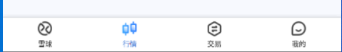

UI Automator是 google 在 Android4.1 版本发布时推出的一款用Java编写的Android UI 自动化测试工具，基于Android Accessibility 服务，Accessibility 服务用于帮助残疾用户使用Android设备和应用。在后台运行，并在accesbilityevents触发时接收系统回调。
UI Automator可以跨进程操作（被测应用和UiAutomator是两个独立的进程），可以对第三方App进行测试，获取屏幕上任意一个APP的任意一个控件属性，并对其进行任意操作。
- 测试脚本只能使用Java语言
- 执行时需要将脚本打包成jar或者apk包上传到设备上才能运行
python UIAutomator2是一个可以使用Python对Android设备进行UI自动化操作的库，底层基于Google Ui Automator。其原理是在手机上使用http rpc服务将UiAutomator中的功能开放出来，然后再将这些http接口封装成Python库。本文档介绍UIAutomator2的使用方法。
uiautomator2安装
uiautomator2的GitHub仓库地址为：https://github.com/openatx/uiautomator2
python安装：
1 | pip3 install -U uiautomator2 |
查看是否安装成功1
uiautomator2 --help
对于UI元素的查看，可以使用uiautomatorviewer或者Appium inspector，uiautomatorviewer经常用不了，Appium inspector又比较麻烦，推荐一个交weditor的工具，安装简单，使用也方便，直接在浏览器上查看。这三个工具的安装和使用方法可参考这一篇文章：App控件定位。
App初始化
连接设备
1 | d = u2.connect_usb(serial) # serial：android设备序列号，通过adb devices命令获取 |
设置newCommandTimeout和隐式等待1
2d.set_new_command_timeout(300) # accessibility服务的最大空闲时间，超时将自动释放
d.implicitly_wait(5) # 隐式等待，元素查找等待时间（默认20s）
安装卸载apk
1 | d.app_install('http://some-domain.com/some.apk') |
打开、停止App
打开APP1
2
3d.app_start(appPackage) # appPackage：包名，先通过atx-agent解析apk包的mainActivity，然后调用am start -n $package/$activity启动
d.app_start(appPackage, appActivity) # 指定appPackage和appActivity，其实就是执行adb shell am start -n appPackage/.appActivity
d.app_start(appPackage, appActivity, wait = False, stop = False, use_monkey = False) # wait: 等待app启动 stop：启动app之前先停止（需要appPackage和 appActivity） use_monkey：使用monkey命令启动app（未指定appActivity时可使用此参数）
停止APP：
1 | d.app_stop(appPackage) # 强制停止应用，相当于adb shell am force-stop <appPackage> |
获取设备应用信息
获取应用信息
1 | >>> d.app_info("com.android.settings") |
获取设备信息
1 | d.info |
获取详细设备信息1
2>>> d.device_info
{u'product': None, u'udid': u'SNHVB20C18002195-d8:a4:91:4f:5c:1e-HLK-AL10', u'brand': u'HONOR', u'cpu': {u'hardware': u'Hisilicon Kirin810', u'cores': 8}, u'usingBeganAt': u'0001-01-01T00:00:00Z', u'provider': None, u'owner': None, u'display': {u'width': 1080, u'height': 2340}, u'battery': {u'status': 5, u'scale': 100, u'temperature': 340, u'level': 100, u'acPowered': False, u'usbPowered': True, u'health': 2, u'voltage': 4355, u'wirelessPowered': False, u'technology': u'Li-poly', u'present': True}, u'version': u'10', u'presenceChangedAt': u'0001-01-01T00:00:00Z', u'agentVersion': u'0.10.0', u'memory': {u'total': 5810780, u'around': u'6 GB'}, u'hwaddr': u'd8:a4:91:4f:5c:1e', u'model': u'HLK-AL10', u'arch': u'', u'serial': u'SNHVB20C18002195', u'sdk': 29}
获取分辨率：1
2>>> d.window_size()
(1080, 2340)
获取设备序列号1
2>>> d.serial
u'SNHVB20C18002195'
获取手机IP地址1
2>>> d.wlan_ip
u'192.168.0.191'
其它
列出所有运行中的APP：1
d.app_list_running() # adb shell pm list packages
打开网页1
d.open_url("https://www.baidu.com") # adb shell am start -a android.intent.action.VIEW -d https://www.baidu.com
UI元素定位
基本选择器
通过属性值定位，支持下面的参数：
text,textContains,textMatches,textStartsWithclassName,classNameMatchesdescription,descriptionContains,descriptionMatches,descriptionStartsWithcheckable,checked,clickable,longClickablescrollable,enabled,focusable,focused,selectedpackageName,packageNameMatchesresourceId,resourceIdMatchesindex,instance
1 | d(className="android.widget.TextView", text="行情") |
相对选择器
子孙节点定位
1 | d(resourceId="android:id/tabs").child(text="行情") |
兄弟节点定位
1 | d(className="android.widget.ImageView").sibling(text="行情") |
相对定位
d(A).left(B)： A的左边元素Bd(A).right(B)：A的右边元素Bd(A).up(B)：A的上边元素Bd(A).down(B)：A的下边元素B

1 | d(text="雪球").right(text="行情") |
多个实例
查看和选择实例
1 | print(d(className="android.widget.RadioButton").count) |
执行结果：
1 | 4 |
也可以使用instance参数选择：
1 | d(className="android.widget.RadioButton", instance=1).click() # 使用匹配到的第2个元素 |
XPath定位
Java uiautoamtor默认不支持xpath，xpath定位是UIAutomator2扩展的一个功能。
1 | d.xpath('//*[@text="行情"]').wait(10.0).click() |
xpath语法可参考Web自动化测试：xpath & CSS Selector定位
元素操作方法
点击
点击UI元素1
2
3
4
5
6ele = d(text="微信")
ele.click(timeout=None, offset=None) # timeout：单位秒，等待元素出现；offset：默认为中心 (0.5, 0.5)
ele.long_click(duration = 0.5, timeout=None) # duration：点击时间；timeout：等待元素出现
ele.click_exists(timeout=10.0)
ele.click_gone(timeout=10.0, interval=1.0) #
点击像素坐标1
2
3d.click(x,y) # 点击像素坐标
d.double_click(x, y, duration=0.1) # 双击像素坐标
d.long_click(x, y, duration=0.5) # 长按
文本输入
文本值获取、输入与清除
1 | d(text="行情").get_text() # 获取元素文本 |
等待wait
等待appActivity出现1
2>>> d.wait_activity(".HWSettings", timeout=10)
True
等待元素
1 | d(text="Settings").wait(timeout=3.0) # 等待元素出现 |
WatchContext
1 | with d.watch_context() as ctx: |
Toast操作
手机页面显示toast
1 | d.toast.show("Hello world") |
获取toast
1 | d.toast.get_message(wait_timeout=5.0, cache_timeout=10.0, "default message") |
滑动swipe
根据像素坐标滑动1
d.swipe(fx, fy, tx, ty, duration = None, steps = None) # 从(fx, fy)滑到(tx, ty)，1 steps大概5ms，如果设置了steps，会忽略duration参数
基于UI对象的滑动1
2ele = d(text="微信")
ele.swipe(direction, steps=10) # 从UI元素中心开始滑动，direction包括"left", "right", "up", "down" 4个方向。
SwipeExt 扩展功能
1 | d.swipe_ext("right") # 右滑，可选4个方向："left", "right", "up", "down" |
拖动drag_to
1 | d(text="Settings").drag_to(x, y, duration=0.5) # 从Settings UI对象拖动到(x,y)位置 |
手势操作
手势放大缩小
1 | d(text="Settings").pinch_in(percent=100, steps=10) # 缩小 |
UI元素状态和信息
判断UI元素是否存在
1 | d(text="行情").exists |
获取元素信息
1 | $ d(text="行情").info |
获取元素坐标
1 | x, y = self.d(text="行情").center() # 元素中心点 |
截图
截取UI对象
1 | im = d(text="行情").screenshot() |
设备截图
1 | d.screenshot("saved.jpg") |
按键操作
uiautomator2支持一些按键事件，比如home、back等
1 | d.press("home") # 点击home键；也可以使用keycode：d.press(0x03) 效果一样 |
按键对应的keycode可以到 https://developer.android.com/reference/android/view/KeyEvent.html 查看。
还支持以下按键名：home、back、left、right、up、down、center、menu、search、enter、delete ( or del)、recent (recent apps)、volume_up、volume_down、volume_mute、camera、power。
其它方法：
1 | d.screen_on() # 点亮屏幕 |
命令行操作
获取指定设备的当前包名和activity
1 | $ python3 -m uiautomator2 --serial SNHVB20C18002195 current |
screenshot: 截图1
$ uiautomator2 screenshot screenshot.jpg
uninstall： 卸载1
2
3$ uiautomator2 uninstall <package-name> # 卸载一个包
$ uiautomator2 uninstall <package-name-1> <package-name-2> # 卸载多个包
$ uiautomator2 uninstall --all # 全部卸载
stop: 停止应用1
2$ uiautomator2 stop com.example.app # 停止一个app
$ uiautomator2 stop --all # 停止所有的app
图像匹配
uiautomator2提供了图像匹配的方法，使用方法如下：
先安装依赖：1
pip3 install -U "uiautomator2[image]" -i https://pypi.doubanio.com/simple
提供了 match() 和 click() 两个接口：1
2
3img = "target.png"
d.image.match(img) # 图像匹配。返回一个dict, eg: {"similarity": 0.9, "point": [200, 300]}
d.image.click(imdata, timeout=10) # 点击。轮询查找图片，当similarity>0.9时，执行点击操作
作者说这个功能还在完善中，经测试体验确实不是很好。 click()方法点击速度很慢，平均4s才找到图片并完成点击操作。match() 方法基本不能用，页面中没有此图片内容，而返回的相似度也达到99%。
我在App自动化测试工具Airtest中介绍了基于图像识别的自动化测试框架Airtest，它在图片识别上操作效率很高，图像匹配速度很快。而airtest、appium和uiautomator2不能一起使用，因为它们使用的uiautomator server不一样，不能同时运行。因此无法直接使用airtest 弥补uiautomator2在图像识别上的缺陷。
那么是否可以只调用airtest图像匹配相关的方法呢？如果你了解Airtest图像识别原理，就知道这肯定是可行的。这里我就不介绍Airtest图像识别具体是怎么实现的了，下面直接给出uiautomator2如何调用Airtest提供的图像识别方法代码。
1 | import uiautomator2 as u2 |
图像匹配的核心代码是 _img_matching() 方法，使用了airtest提供的TemplateMatching类，基于kaze算法进行图像识别。
airtest图像匹配效率很高，它提供的图像匹配方法可以弥补uiautomator2在图像匹配上的缺陷。
pytest + Uiautomator2实例
下面来写一个使用pytest测试框架的小例子。
测试步骤：
- 打开雪球app
- 进入行情页面
- 点击搜索
- 输入“招商银行”
- 点击股票代码03968
- 断言股票价格
Python代码：
1 | #!/usr/bin/python3 |
本文标题:App自动化测试工具Uiautomator2
文章作者:hiyo
文章链接:https://hiyongz.github.io/posts/app-testing-tools-for-uiautomator2/
许可协议:本博客文章除特别声明外，均采用CC BY-NC-ND 4.0 许可协议。转载请保留原文链接及作者。